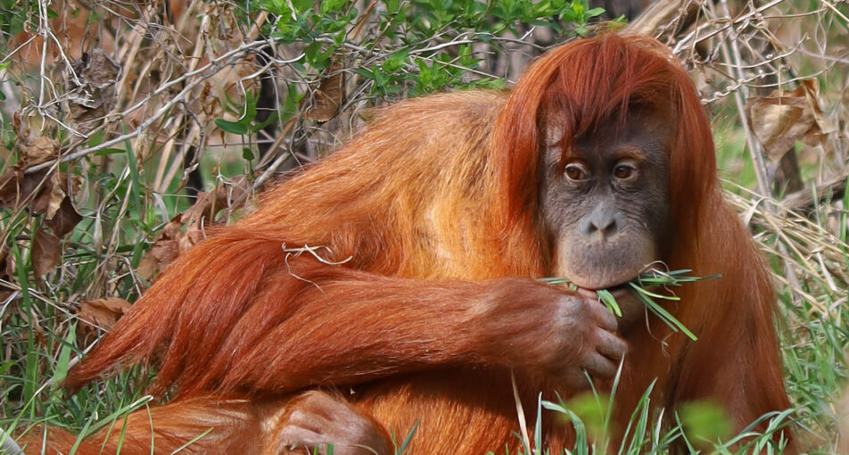
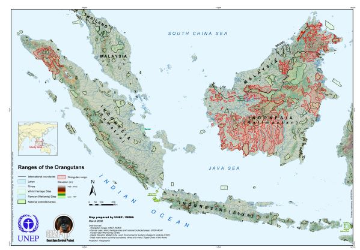
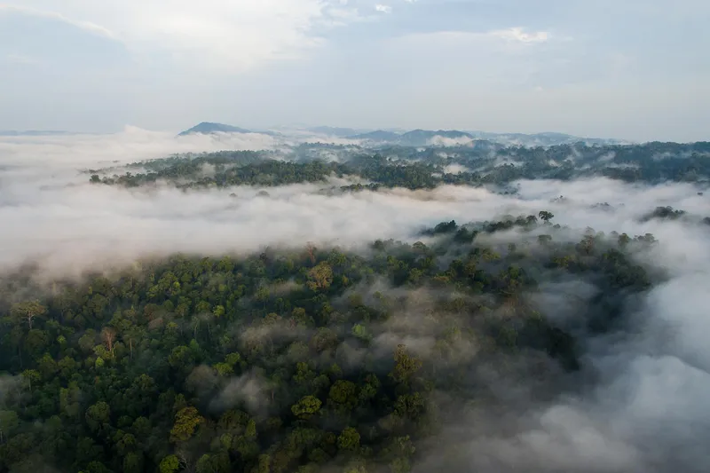

| Common Name | Sumatran Orangutan |
|---|---|
| Conservation Status | Critically Endangered (IUCN) Red List |
| Kingdom | Animalia |
| Phylum | Chordata |
| Subphylum | Vertebrata |
| Class | Mammalia |
| Order | Primates |
| Suborder | Haplorhini |
| Family | Hominidae |
| Genus | Pongo |
| Species | Pongo pbelii [1], [2], [3], [4] |
-
Physical Profile
-
Size Ranges
-
Identification Markings
Covered in long, shaggy, pale reddish-orange fur. They have longer, more slender faces and longer facial hair/beards than Bornean orangutans. Mature adult males develop prominent, semi-circular fleshy cheek pads (flanges) and a visible throat pouch. [7], [8]
-
Habitat & Geography
-
Habitat
Primary tropical rainforests and lowland peat swamp forests, living almost completely in the forest canopy.
-
Distribution
Endemic exclusively to the island of Sumatra, Indonesia, primarily restricted to the northern Leuser Ecosystem. [9], [10], [11], [12]
-

Source: Animalia Life 
Source: World Wildlife Fund
-
Ecology & Behavior
-
Diet
- Fruit, primarily figs and jackfruits
- Leaves
- Bark
- Flowers
- Insects, primarily bees and termites
- Bird eggs
- Small vertebrates, occasionally
-
Behavior
Highly arboreal; they are the heaviest tree-dwelling mammals on Earth, utilizing slow, deliberate quadrumanous climbing methods. They display advanced cognitive skills and tool use, crafting sticks to extract honey or termites. They build elaborate tree nests out of branches every single night.
-
Communication
Highly vocal. Flanged adult males use a large throat sac to emit loud, resonating "long calls" that amplify through the forest to assert territorial boundaries and attract females.
-
Life History Cycle & Breeding Behaviors
Incredibly long development cycle. Infants rely entirely on mothers for travel and nutrition up to age 2.5, transitioning to juveniles (ages 2.5 – 5) where they begin building nearby nests. Females reach sexual maturity around age 8 and have one of the longest inter-birth intervals of any mammal (approx. 8 – 9 years). Lifespan reaches up to 45 – 50 years in the wild.
-
Predators
- Sumatran tigers
- Large pythons
- Saltwater crocodiles [5], [6], [8], [10], [13], [14]